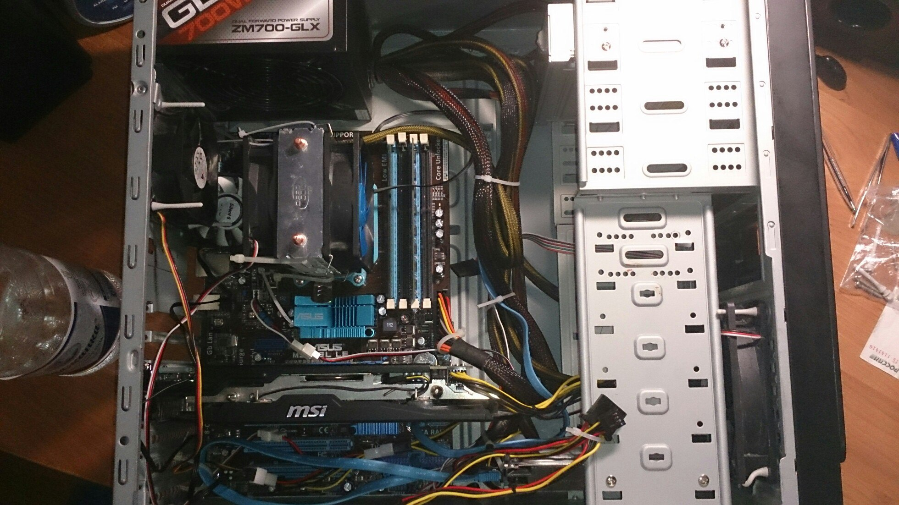
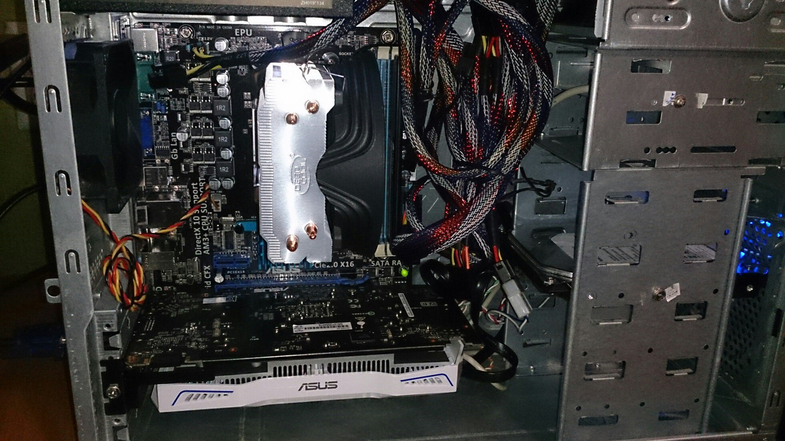

В свободное время я предпочитаю не страдать от безделья, а посему стараюсь занять себя чем-то. Ниже приведу некоторые из моих деяний. Раздел будет потихоньку пополняться.
Сборка/мелкий ремонт компьютерной техники и переферии
Восстановление старого монитора (перепайка мертвого инвертера питания)
Сборка домашнего компьютера на базе чипсета AMD 760G. Дальнейшие эксперименты с разгоном переросли в колхоз: попытки улучшить охлаждение фаз VRM. В результате частоту удалось поднять до стабильных 3.9 ГГц, но, поскольку чипсет не позволяет вручную изменять значения вольтажа как на процессоре, так и на мостах, это был предел, пусть старичок FX-6100 и способен на гораздо большее.
Пример рациональной сборки домашнего компьютера в сильно урезанном бюджете (30 килорупий) - сентябрь 2016 г.
В данный момент сижу на весьма интересной связке: i5 2500 с алиэкспресса по смешной цене (который, к слову,исправно работает и спокойно выдерживает часовой тест ОССТ и линпака) + GTX 950. 270-ый радик, к сожалению, сгорел сразу после истечения гарантийного срока.